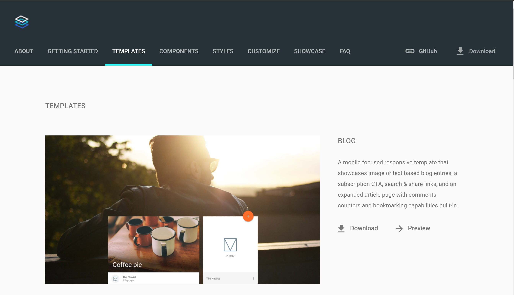
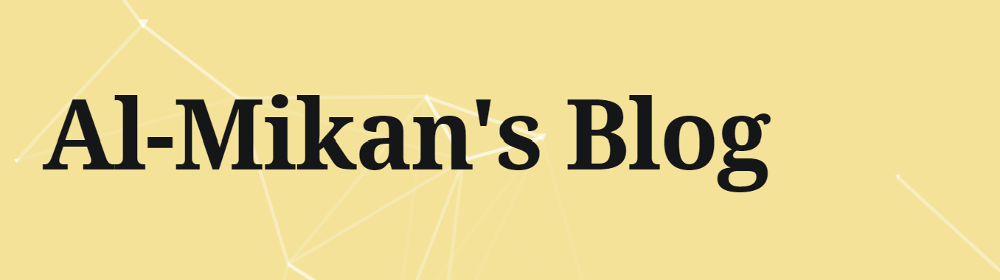

これは、HUITアドベントカレンダー2021の20日目の記事です。 19日目→@Kujiroさんの記事
作ったもの：https://al-mikan.github.io/
本当はこの夏参加したハッカソンのことを書こうと思ったのですが、ブログの外見をかっこよくすることにはまってしまったのでそのことについて書きます。
背景
初めてブログを書くにあたり、どのサイトを利用するか迷いました。
平凡じゃつまらないし、かといって１から作る時間ない...
もちろんスマホにも対応させたい...
github pagesのテンプレはダサい...
これらを解決させるために使用したものは以下の2つです
・Github Pages
・Material Design Lite
また、背景にアニメーションを付けてみました
Github Pagesとは
みなさんおなじみだと思いますがGitHubが提供するホスティングサービスで、webページをインターネット上に公開することができます。
Github Pagesを使用するメリットとして
・無料
・githubアカウントがあればすぐに始められる
・レンタルサーバーを契約しなくていい
・余計なアカウントが増えない
・容量無限
などが挙げられます。一方、動的なものは実装できなく、gitの仕様やhtml,cssについて少し知っている必要があるので注意が必要です。
Material Design Liteとは
2015年にGoogleが発表したマテリアルデザイン仕様のWebサイトを構築するためのフロントエンドフレームワークです。
お試しで使ってみましたがとても楽で感動しました！ドキュメントもしっかりしています
そもそもマテリアルデザインとは、2014年にGoogleが発表した、モバイルOS「Android5.0(Lolipop)」より
採用されているデザインコンセプト(ガイドライン)です。ユーザーの操作性を重視して感覚で理解できることを目的としているらしい...
さっそく使ってみる
使い方は簡単で以下のタグを <head>内に埋め込むだけです。
<link rel="stylesheet" href="https://fonts.googleapis.com/icon?family=Material+Icons" >
<link rel="stylesheet" href="https://code.getmdl.io/1.3.0/material.indigo-pink.min.css" >
<script defer src="https://code.getmdl.io/1.3.0/material.min.js" > </script >
今回使用するTempleteの他にもsliders,togglesなどの各種コンポーネントがあるので今後使ってみたいと思います！
詳しくはこちらをご覧ください。
今回使用したTemplatesはこちら↓

cardのcomponentが使用されていてとてもいい感じです！✨
ダウンロード後、ファイルの整理や修正などをしてもかかった時間は１時間程度でした。
アニメーション
particles.jsというライブラリを使用しました。 このライブラリにあるオンラインジェネレータではオリジナルの動きを作成できるのでおすすめです！ ただ、localでは下のような幾何学模様が動いて見えるんですがGithubPagesではアニメーションが反映されませんでした。いったいなぜ…（詳しい方教えてください）
最後に
短くなってしまいましたが、これで終わりたいと思います！機能の実装はまだまだなので自分の納得できるwebページを作っていきたいと思います。 ハッカソン体験記も書きます 💪